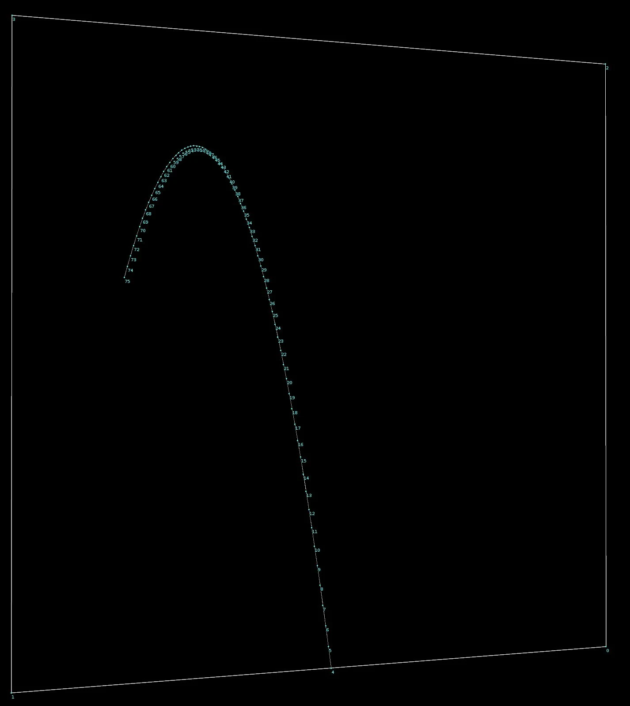

For this tool, I wanted to create an experience centered around direct viewport interaction—moving beyond parameter sliders so the artist can click directly on viewport geometry and immediately trigger responsive procedural animations. I built the interactive layer using Houdini Python states, SideFX's framework for crafting custom interactive viewport tools.
Viewport Python States & VEX Solvers
Leveraging Houdini's built-in Python state templates, I adapted the point-placement handler to support custom surface collision meshes. When the user clicks in the viewport, a point is instantiated with an attribute recording the current timeline frame. This birth-frame stamp enables each firework rocket to compute its trajectory, ascent velocity, and burst timing independently with consistent procedural playback.

The remainder of the simulation runs in VEX, where ballistic launch arcs, particle detonation physics, drag, gravity dissipation, and color emission curves are evaluated. High-level controls such as arc curvature, launch speed, burst radius, spark density, and color palettes are exposed as user-friendly parameters on the HDA.